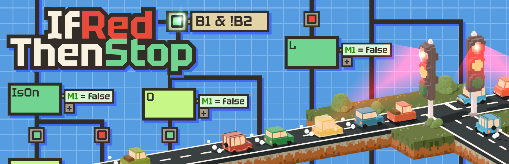
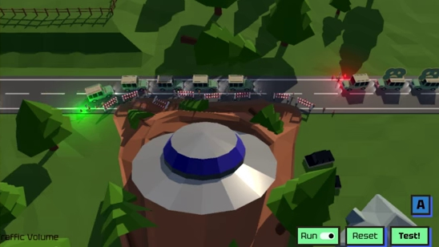
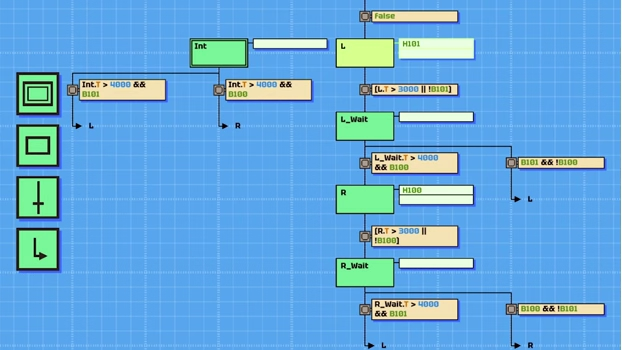
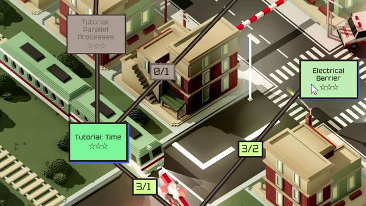
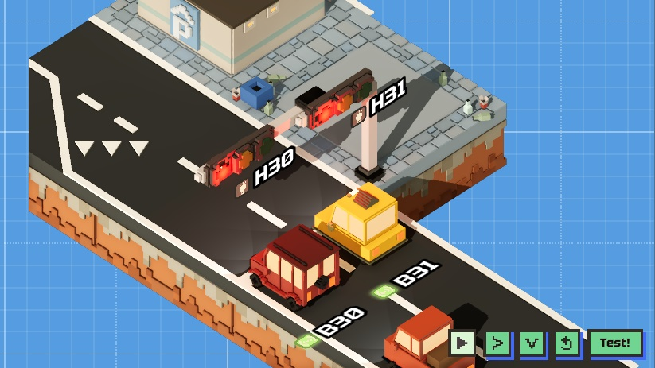
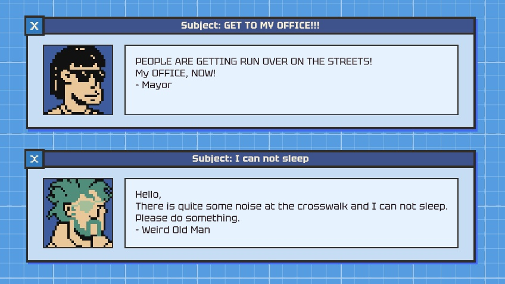
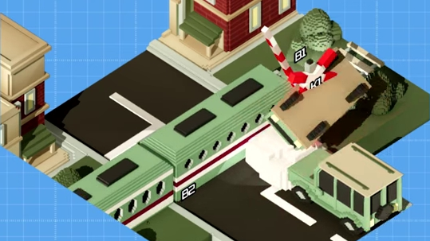

Manage and optimize traffic flow with smart signals and barriers. Vehicles and pedestrians must move from point A to B, but not everyone can go first. It's essential to balance priorities, reduce congestion, and create efficient traffic solutions. Timing and decisions make all the difference.

Learn the fundamentals of state machines in automation. Improve your skills to tackle more complex situations of traffic systems. Explore how to control time-dependent processes with state sequences. Discover how your solutions lead to optimized traffic flow and dynamic system improvements.

You are the city's mayor. Unfortunately, the infrastructure is falling apart, which makes your citizens angry. As you lack the funds to hire engineers, you decide to take matters into your own hands. Armed with an old book about state machines you set out to fix the problems in your city.

Connect and integrate multiple traffic systems to create a cohesive network. Manage the flow across intersections, pedestrian crossings and train tracks. Ensure that each part of the system works together seamlessly to improve overall efficiency.

Iterate and refine your solutions based on your citizen's feedback. Congestion and delays will drive them nuts. Listen to your people's complaints to adjust strategies, improve efficiency and ensure smooth traffic management.
